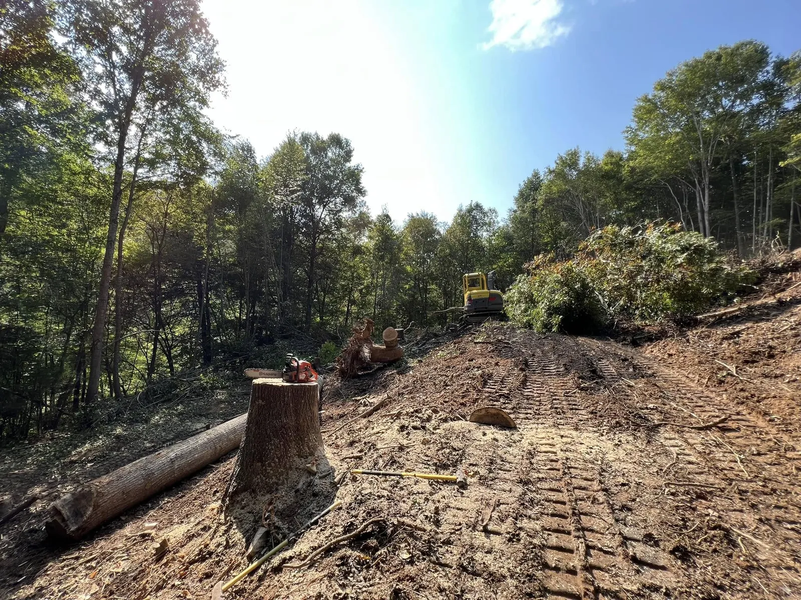

Clearing & Grubbing
Trees, undergrowth, and brush removed, then the stumps and root mat grubbed out so the subgrade is clean and stable.
From raw, wooded mountain ground to a clean, build-ready site. Clearing, grubbing, brush and stump removal, and debris haul-off across Yancey, Mitchell, Avery, and the surrounding WNC counties.

Most jobs in the mountains start the same way: the trees, brush, and roots have to come out before anything can be built. AGLM clears building sites, driveways, pasture, and view corridors, then grubs out the stumps and root mat so the ground is actually ready to grade, not just knocked down.
Because we self-perform the whole site-work scope, clearing does not stop at the tree line. We follow it straight into rough grading, drainage, and the driveway cut, with one accountable crew, so your site moves from raw land to build-ready without waiting on a second contractor.
A full clearing scope handled by one crew, from the first tree to a clean, gradeable site.
Trees, undergrowth, and brush removed, then the stumps and root mat grubbed out so the subgrade is clean and stable.
Stumps pulled and debris hauled off, chipped, or piled and burned where local rules allow. We leave a clean site, not a slash pile.
Cleared ground rough graded for a house site, shop, or commercial pad, ready to hand to the next trade.
Clearing the route and cutting in the access road or driveway so equipment, and later your vehicles, can reach the site.
Cleared ground needs water managed from day one. We set ditches, swales, and erosion measures so the site does not wash.
Spoil, stumps, and debris trucked off site so you are left with usable, open ground.

We clear and stabilize lots that drop off fast, with the grading and walls to make them usable.
One crew takes the site from clearing through rough grade and drainage. No handoff, no second mobilization.
A licensed commercial GC on the job, not a one-truck outfit. You deal with the owner.

It depends on the acreage, how heavy the growth and tree cover are, the slope, and how much debris has to be hauled off versus chipped or burned on site. The best way to get a real number is to walk the property with us. We give honest quotes after seeing the ground.
Yes. Steep, rocky, wet WNC ground is what we work in every day. We clear building sites, driveways, and view corridors on terrain that flatland crews are not set up for, and we plan drainage and erosion control as part of the job.
We grub out stumps and root mat, then haul off, chip, or pile and burn the debris depending on the site and what local burn rules allow. We leave you a clean, build-ready site, not a field of stumps and slash.
Yes, and that is the advantage of hiring one self-perform contractor. We clear, grub, rough grade, set drainage, and cut the driveway with the same crew, so the site moves straight from raw land to ready for the next trade.
Tell us about the property and the scope. We'll get back fast.